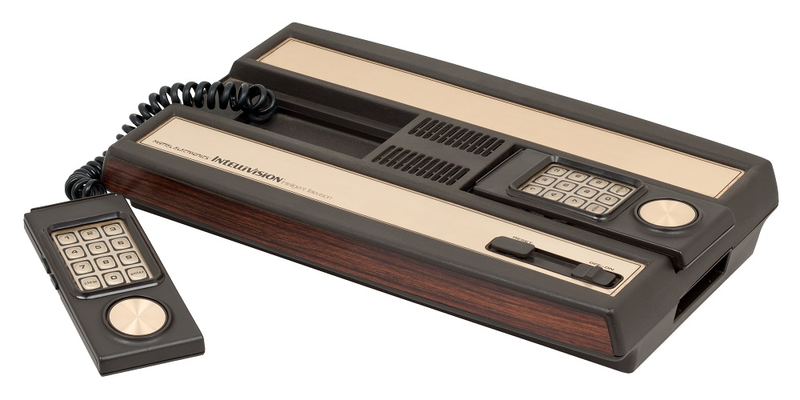

Segunda Generación 1976 - 1983
Se inicia en la segunda mitad de los años 1970 con la llegada de la Fairchild Channel F en 1976, y más por sobre todo de la Atari 2600, en 1977, que fue la más popular y exitosa de su generación.
Atari 2600
Se convertiría en la consola (de lejos) más popular de la generación, también en Europa, dónde llegaría un año más tarde.

Bally Astrocade
Fue lanzada también en 1977, pero sólo disponible a través de pedidos por correo. Nunca tuvo demasiada popularidad y tampoco ayudó el poco interés de Bally en el mercado arcade.

Odyssey 2
Conocida también como Videopac G7000, es una videoconsola lanzada en 1978 y Sucesora de la Magnavox Odyssey. Fue descontinuada el 20 de marzo de 1984.

Intellivision
La Intellivision fue desarrollada por Mattel Electronics, una subsidiaria formada expresamente para el desarrollo de juegos electrónicos. Con los gráficos de “alta resolución” – al menos para la época – e incluso un sintetizador de voz
Emerson Arcadia 2001
Es una consola de 8 bits de segunda generación lanzada por Emerson Radio. El Arcadia es mucho más pequeño que sus competidores contemporáneos y está alimentado por una fuente de alimentación estándar de 12 voltios, por lo que puede usarse en un bote o en un vehículo. También tiene dos salidas (o entradas) tomas de auriculares en la parte posterior de la unidad, en los lados izquierdo y derecho.